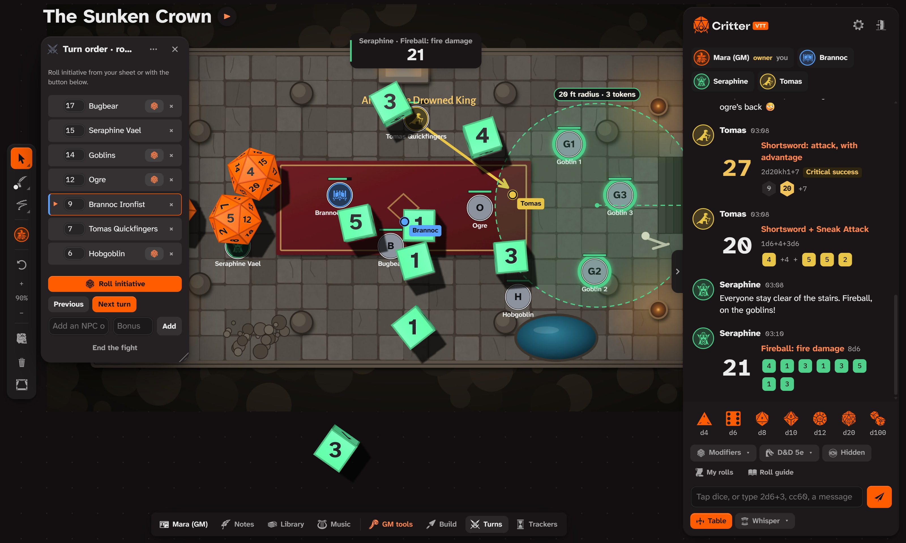
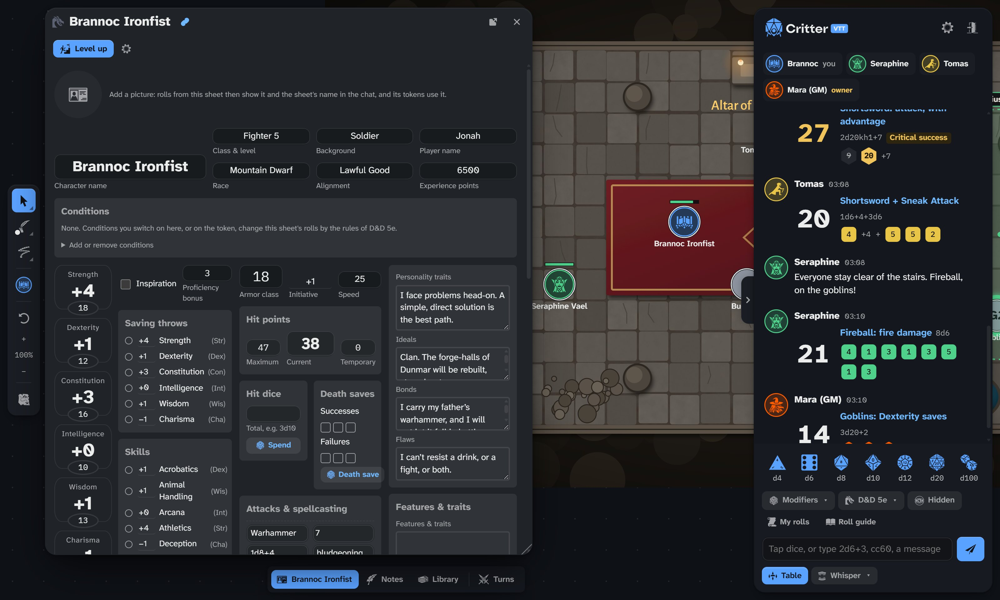
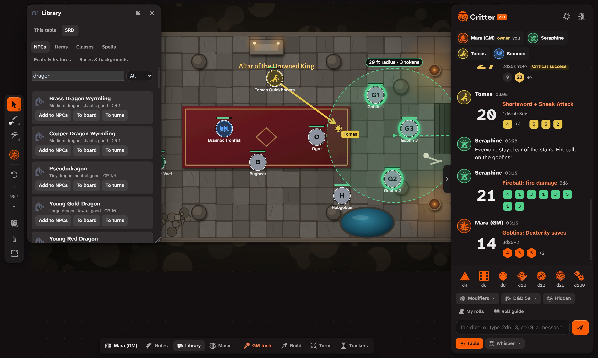
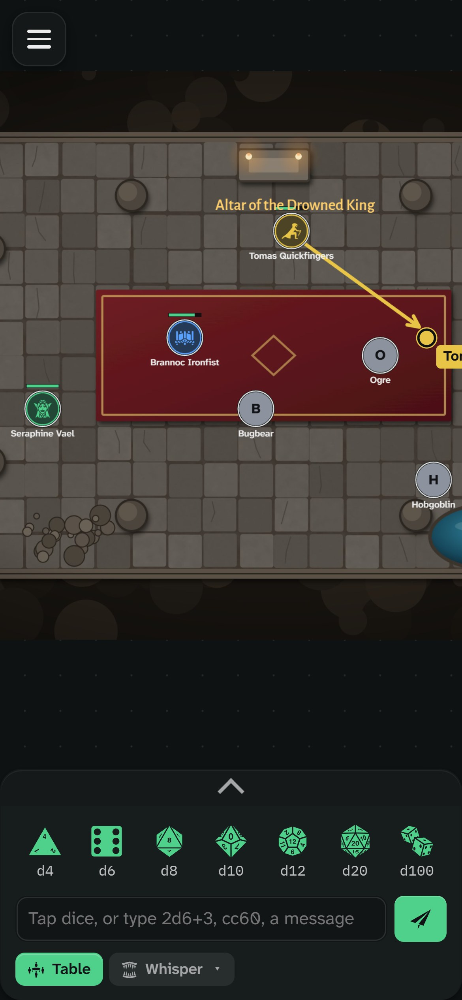

Your table, ready to play.
Critter VTT is a free virtual tabletop. Open your campaign, send your group the table’s code, and everyone sits down at the same battle map, with the same dice, sheets and rulebooks, and every roll as it happens.
Free and open source. Nothing to install to play in a browser.

Everyone sees the same moment.
The board, the dice and the chat are shared live. Rolls tumble on everyone’s screen in the roller’s colour, and land in the chat with every die shown.
- 3D dice from d4 to d100 with real physics, plus typed rolls like
2d20kh1+7, modifiers, advantage, and hidden GM rolls. - A battle map with tokens, health bars, drawing tools, arrows, text and live cursors for every player.
- Measuring lines, cones and circles that count squares and light up every token they catch.
- Turn order with initiative rolled from each sheet, rounds, and a ring around whoever’s up.
- Chat and whispers with messages, replies, private rolls and handouts.
Sheets that roll for you.
Each player claims their seat and gets their own sheet, coloured in their colour. Click a skill, a save or an attack, and it rolls.
- Character sheets for D&D 5e, Pathfinder 2e, Daggerheart and more, with conditions that change the rolls.
- Bring your character from D&D Beyond (through your Homebase), Foundry VTT, or a filled-in PDF.
- Level up step by step, with the rules of your system.

The rules are already on the table.
A built-in compendium of monsters, spells, items, classes and backgrounds: search it, drop a monster on the board, or add it straight to the turn order.
- Compendium for D&D 5e, Pathfinder 2e, Daggerheart, Blades in the Dark and Fate.
- Eleven game systems with their own dice rules, from plain dice to Call of Cthulhu, Powered by the Apocalypse, Vampire and Shadowrun.
- Your own books imported for your private games, kept in your browser or shared with the table.

Play from a phone.
Critter VTT runs in any modern browser. On a phone, the board fills the screen and the dice and chat slide up from the bottom.
- No install for players: open the link and type the table’s code.
- The Windows app keeps your campaigns in a saves folder on your computer and updates itself.
- Accessible with keyboard control of tokens, screen reader labels, a font for dyslexia and an accessibility menu.

The little things that help.
Scene builder
Walls, doors, windows and lights, with fog of war that the GM reveals as the party explores.
Rewind the table
Your campaign saves itself on your computer as you play. Rewind to any save, and undo the rewind too.
Players and seats
The owner sets up the players; each person claims theirs with a name, token and colour.
Trackers and clocks
Progress clocks and trackers the whole table can see.
Music at the table
Critter Sounds streams to every player. Each player keeps their own volume.
GM tools
Hidden rolls, a GM layer, an encounter builder, random tables and scenes prepared in advance.
Campaigns
Your latest campaigns wait on the start screen. Each evening opens with a fresh table code, and the campaign stays in your saves.
A tour you can try
A hands-on walkthrough for players and GMs: roll, chat and move your token as you go.
Your group, your server.
Critter VTT connects through Homebase, a small server that keeps your tables and pushes every change live. Use the shared one, or run your own.
On Cloudflare
A Worker on your own free Cloudflare account: one double-click on setup-homebase.cmd puts it online.
On your computer
A small Node server: node server.mjs --port 8787. Players open its address in a browser.
Your data
Tables, autosaves and uploaded music stay on your server, in a folder you can back up.
The full guide is in the project README.
Three apps, one table.
Critter VTT is where you play. Critter Sounds runs the music, and Critter Notes keeps the campaign. They connect through the same Homebase.
The free virtual tabletop: battle maps, 3D dice and sheets, in a browser or on Windows.
You’re hereMusic, sound pads and soundscapes, played live to your table, Discord or Fluxer.
Take a look →Plan sessions, write the world, draw maps and boards, and send it all to the table.
Take a look →Get Critter VTT.
The Windows app, with its own window, a saves folder on your computer, and updates from inside the app.
Android, for players
Join your group's table from your phone: type the code, and Critter VTT takes you back to that table next time.
In your browser
Nothing to install. Works on computers, tablets and phones.
The installer isn’t code-signed yet, so Windows SmartScreen may warn the first time: choose More info › Run anyway. On Android, allow your browser to install apps when it asks (the app isn’t on Google Play yet). Every version and what changed is on the Releases page.